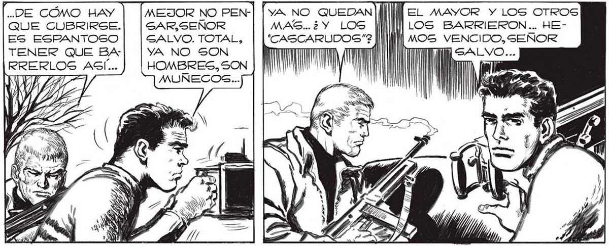
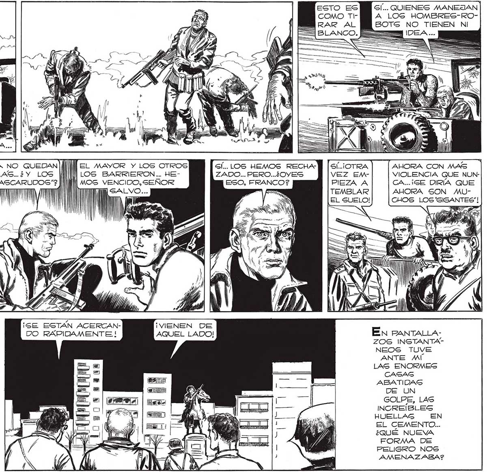

208 PP —A— NuesTrRA REACCIÓN FUE INSTANTÁNEA MEJOR NO PENSAR, SEÑOR SALVO. TOTAL, "DE CÓMO HAY QUE CUBRIRSE. ES ESPANTOSO TENER QUE BA| |vA NO SON RRERLOS AGÍ... | | HOMBRES, SON WI MUÑECOS... Ny j LA SORPRESA DEL INCENDIO Y EL ATAQUE POSTERIOR NOS HABÍAN HECHO OLVIDAR DE AQUELLOS SERES MIGTERIOSOS CAPACES DE DEMOLER CUADRAS ENTERAG.. LOS GURBOS QUE DIJERA El 'MANO/... - — _— KZ Ñ“YA NO QUEDAN|| MAS..2¿ Y LOS ill 'CASCARUDOS”2 III '" (SE ESTÁN ACERCANDO RAPIDAMENTE ! eL MAYOR Y LOS OTROS LOS BARRIERON.. HEMOS VENCIDO, SEÑOR ¡VENEN DE AQUEL LADO! ss CESE] ERE MY == “ TS nn GÍ... LOS HEMOS RECHAZADO... PERO...¿OVES ESO, FRANCO? S ! Y SÍ... QUIENES MANEJAN A LOS HOMBRES-ROBOTS NO TIENEN NI AHORA CON MAS VIOLENCIA QUE NUNCA..¡GE DIRÍA QUE AHORA SON MUCHOS LOS "GIGANTES"! e 0 | En RANTALLAZOS INSTANTANEOS TUVE ANTE MÍ LAS ENORMES CASAG ABATIDAS DE UN GOLPE, LAS INCREÍBLES HUELLAG EN EL CEMENTO... ¿QUÉ NUEVA FORMA DE PELIGRO NOS AMENAZABA?

